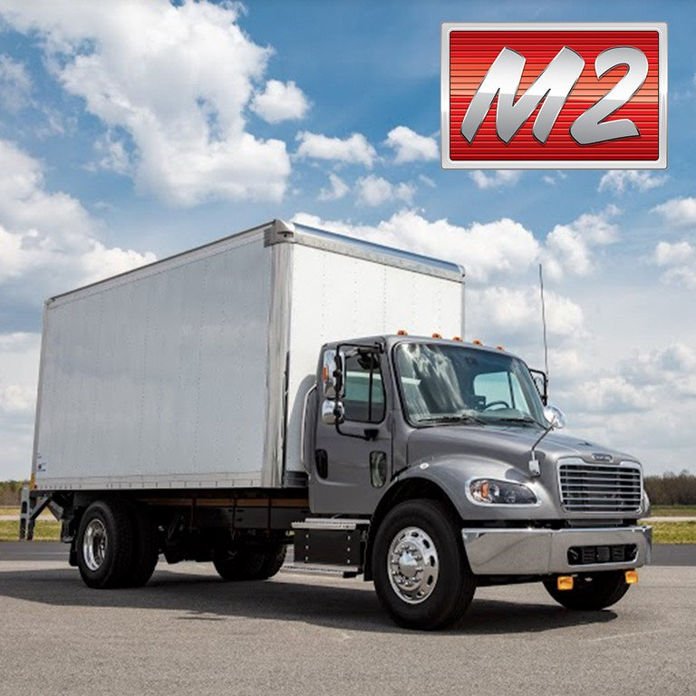
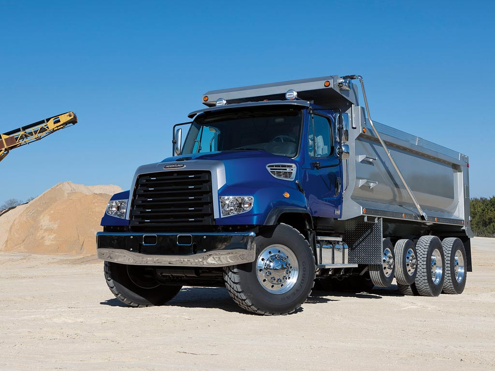
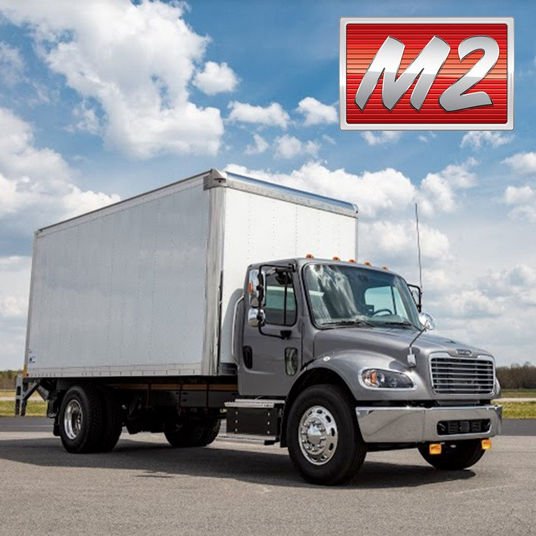
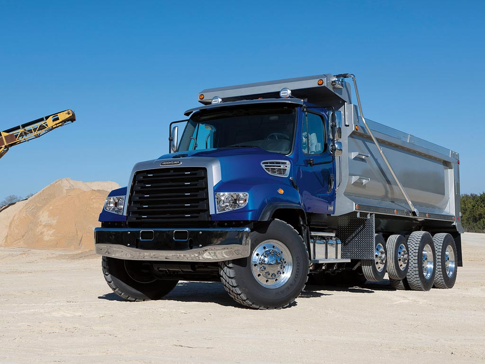

Servicios
Ofrecemos una gran variedad de vehiculo, los cuales estan diseñados para soportar grandes cantidades de carga, ademas contamos con las nuesvas tecnologias que haran tus viajes mas faciles.


Flota
Aqui puedes observar la gran variedad de vehiculos que te ofrecemos, encontraras modelos y sus caracteristicas.
Cascadia:Al crear este camión, nuestro objetivo es bajar el costo total de operación. Como resultado, el Cascadia es el tractocamión con mayor tecnología, el más rentable, el más seguro y el más cómodo en el mercado
ELF 100:Carga 1.5 toneladas, cuenta con un motor diesel Euro V de 4 cilindros, potencia de 122 hp y torque de 262 libras pie.
Familia 360:Es el camion ligero que le ayudara a ganar mas dinero. cuenta con diseño cab over, lo que le permite tener hasta un metro más de espacio de carga.
M2:Además de una amplia variedad de aplicaciones funcionales en ciudad o carretera, el M2 tiene 4 opciones de motorización que se adaptan a tus necesidades.
114SD:El camión 114SD de Freightliner está diseñado y construido para satisfacer las necesidades más demandantes en aplicaciones vocacionales y de uso severo.

 



Acerca de Nosotros
Hoy en día, "TRANSPORT KIRA" es una empresa líder en su sector, conectando de manera confiable a las comunidades y empresas a través de los desafiantes terrenos del suroeste, y su historia continúa siendo una inspiración para emprendedores de todo el país..
Nuestra mision es propocionar soluciones logisticas confiables, eficientes que conecten de manera segura a alas personas que confian en nosotros.
Informacion sobre al experiencia y la calida del servicio.
Testimonios de clientes satisfechos.
Juan Carlos: LOS TRANSPORTES DE ESTA EMPRESA CON LO MEJOR DE LO MEJOR.
Carlo perez: los mejores en transportes pesados, sin duda saben lo que hacen.